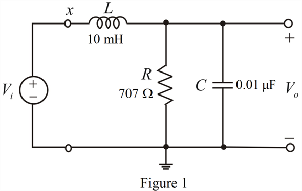

Refer to Figure 16.18(b) in the textbook for the low-pass filter.
The resonant frequency is,
Substitute for and for  in the equation.
in the equation.
Therefore, the value of inductor is, .
Refer to Figure 16.18(b) in the textbook for the low-pass filter.
The resonant frequency is,
Substitute for and for in the equation.
Therefore, the value of inductor is, .
Consider the following relation:
Substitute for , for  , and for
, and for  in the equation.
in the equation.

Therefore, the value of resistor is, .
The designed circuit is shown in Figure 1.
